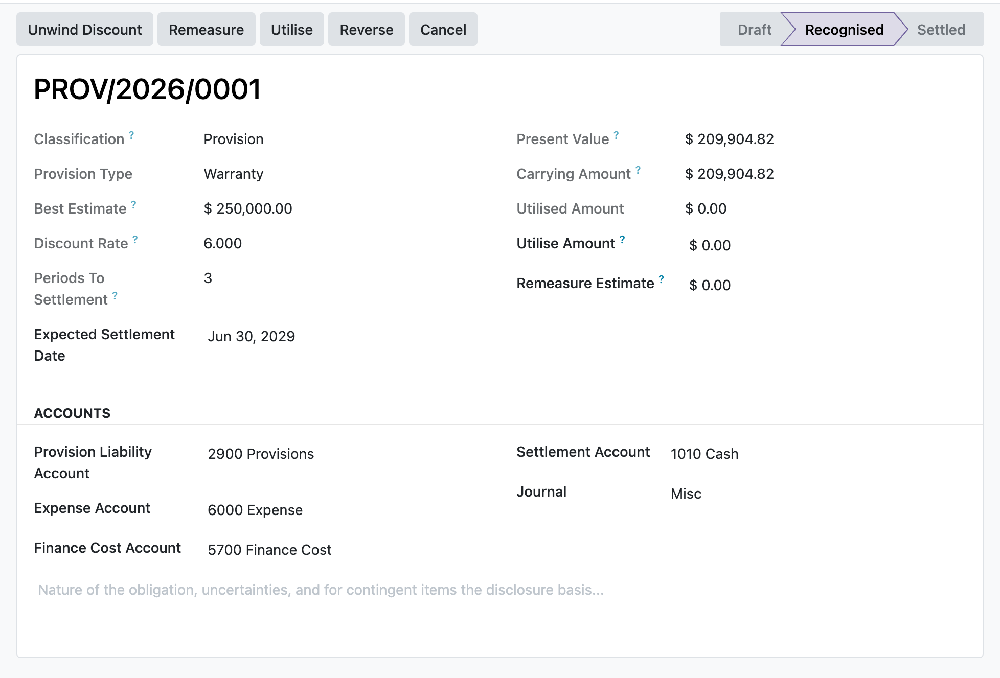

Recognise, discount, unwind, remeasure and utilise IAS 37 provisions with every step posted to the ledger and locked, while contingent liabilities and assets stay disclosure only and are never posted.
A pre-tax rate and a period count discount the best estimate to present value, and the Unwind Discount action accretes the carrying amount one compounded step per whole period that has fallen due, capped so it never overshoots the undiscounted estimate.
Contingent liabilities and contingent assets are flagged as disclosure only. Recognising them is blocked at the action, and a validation constraint refuses any contingent item that reaches a recognised or settled state (IAS 37.27-28).
A recognised provision cannot be re-keyed to settled, reversed or cancelled by a raw write, and its measurement inputs freeze once posted. Transitions run only through the Utilise, Reverse and Cancel actions that post the matching journal entry.
You raise a warranty provision, enter the best estimate, a discount rate and the periods to settlement, and press Recognise. The present value posts as expense against the provision liability. Each period you press Unwind Discount and the finance cost accretes the liability towards the full estimate. When a claim is paid you enter the amount and press Utilise, settling it against the provision; once the carrying amount reaches nil the provision moves to settled automatically. If the estimate changes you press Remeasure to book the difference through profit or loss.
In the shipped code today, each one a place where a cheaper module silently does the wrong thing.
Annual anniversaries and a final settlement-date stub determine when discount periods fall due. Repeat clicks cannot recognise a period twice, and each catch-up boundary keeps its own dated sealed entry.
A discounted remeasurement refuses to reuse the frozen recognition rate: the manager stages the current pre-tax rate, basis and evidence, which become the next unwind basis.
The provision debit is capped at carrying amount and any excess actual expenditure is debited to its configured expense account, while the full payable or receivable settlement line carries the counterparty.
Journal identity and recognised measurement inputs freeze after posting; changes move only through sealed lifecycle actions, and a remeasurement to nil closes as reversed instead of stranding an empty recognised record.
odoo 19 provisions, IAS 37 provisions odoo, provision accounting odoo, best estimate provision, present value provision odoo, discount unwinding finance cost, onerous contract provision, restructuring provision odoo, warranty provision accounting, contingent liability disclosure, contingent asset odoo, provision remeasurement IAS 37, provision reversal writeback, provision liability journal entry, odoo community accounting provisions

Provision recognised and discountedAn IAS 37 provision measured at the present value of the best estimate, with the carrying amount, the discount unwind schedule, and the utilise, remeasure, and reverse actions on the recognised liability.
Premium ERP Heritage modules that extend the same stack, each built to the same engineering bar.
Sync certifications, qualifications and employee document metadata from the Employment Hero people platform into...
Sync Employment Hero leave categories, leave requests and leave balances into the standard Odoo Time Off app, wit...
Show the Hijri (Umm al-Qura) date alongside Gregorian dates across Odoo 19
Connect Odoo partner records to the Saudi SPL National Address service and the Wathq commercial registry
One click install of the full Employment Hero integration for Odoo Community, covering the connector, two way syn...
The Malaysia country pack for the ERP Heritage Employment Hero integration